This chapter discusses exceptional scope (section 11.2), a need for ILYR layers distinct from their use with conjunction (section 11.3), managing control (section 11.5) and preventing control (section 11.6).
Quantificational elements scope from their place of occurrence with a leftward direction (but see section 11.3 for how this can be manipulated), only with internal layers, phrase heads, and verbs of clauses always within the scope of other elements of the same layer. But a quantificational element with a functional role at its point of occurrence can also have broader scope consequences. This is closely related to what happens for displacement in section 10.2.
Displacement of a quantificational element needs to capture a narrower point of integration from a broader scope gained from the place of element occurrence. Annotation has an indexed *ICH* node under role information at the place of integration. The quantificational element from its place of occurrence takes index information identical to the *ICH* as its own role integration information.
Exceptional scope needs to capture a broader scope contribution from an occurrence point that is the point of role integration. Annotation for exceptional scope is also achieved with an indexed *ICH* node, only with placement of this indexed node without any role integration information at the point where the exceptional scope begins. The quantificational element from its place of occurrence has both role integration information and the same index information as the *ICH* occurrence that itself lacks role integration information but which gives the exceptional scope information in virtue of its placement.
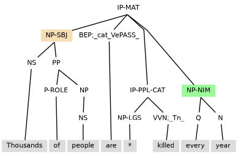
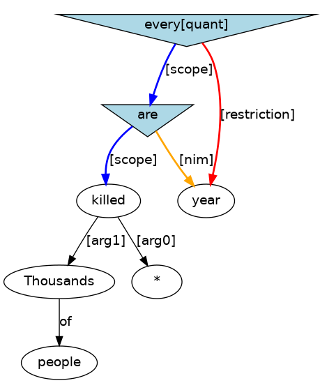
The anaphoric connection in (11.3) gives the indefinite a knife too have wide scope over Every week.
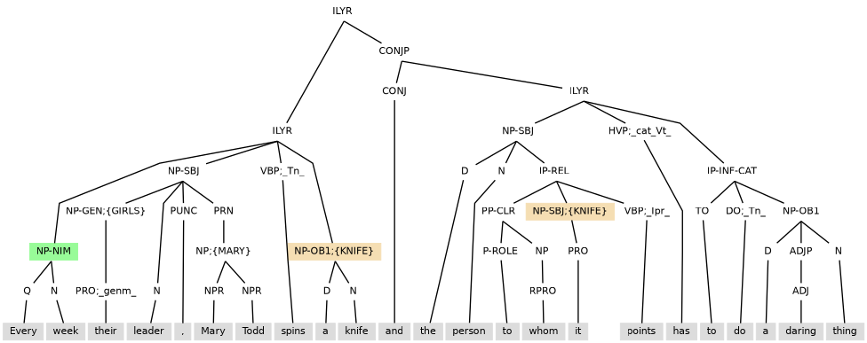
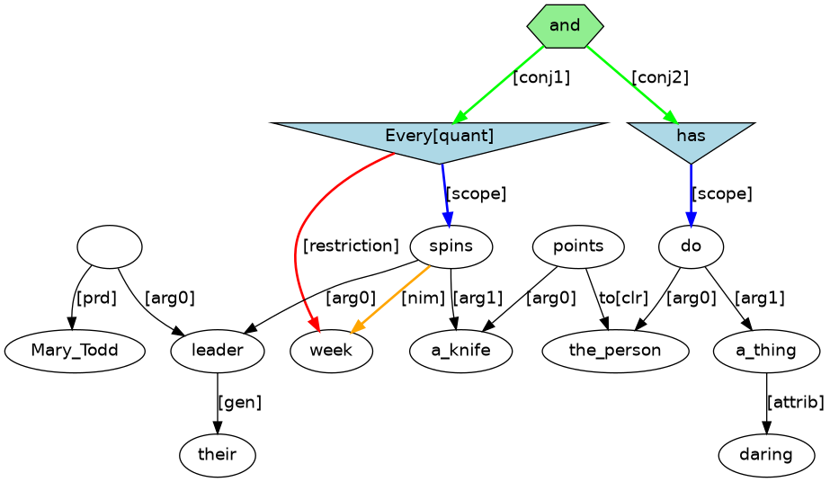
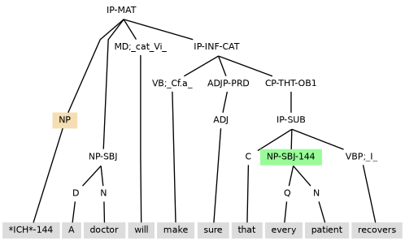
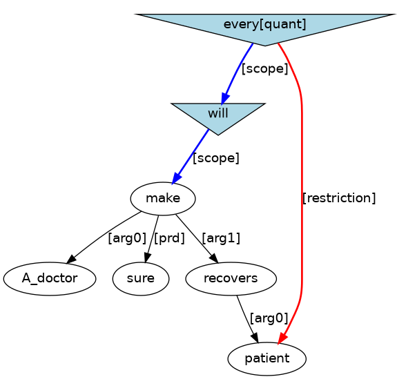
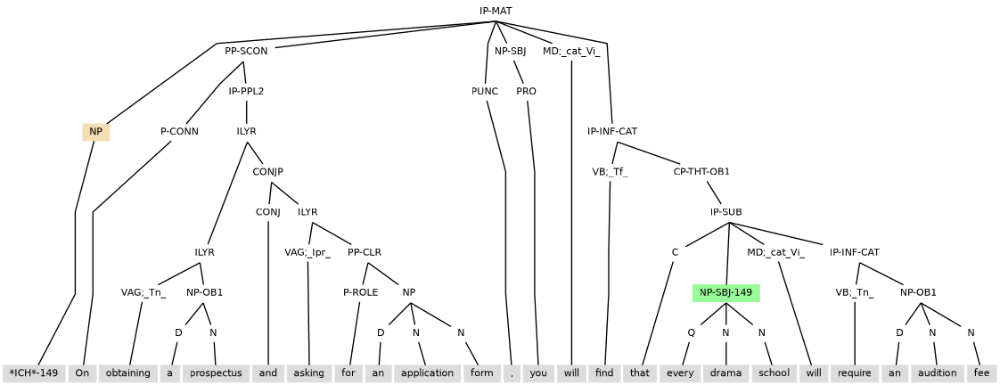
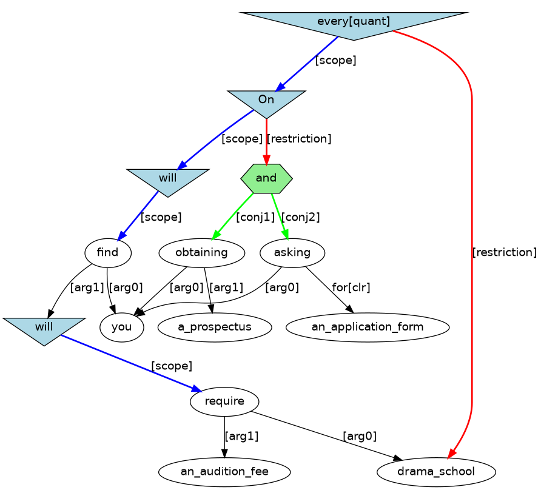
Examples above have IP-PPL-CAT structures that follow the subject, so that the IP-PPL-CAT is within the scope of the subject. The word order of (11.9) suggests content for an IP-PPL-CAT (Opposing him) that precedes the subject (the French Admiral), and yet inheritance of the subject is also needed. Subject inheritance is achieved by the placement of the IP-PPL-CAT under an ILYR projection that also contains the auxiliary verb. With this annotation, the ILYR projection functions as a direct embedding of the layer that contains it, so that all other content of the containing layer scopes over the ILYR, as if the ILYR had its content placed last in the containing layer.
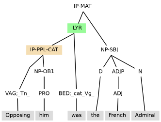
It follows that an ILYR instance will either (i) have a placement that is directly under a clause layer, as in (11.9); or (ii) have a placement that is either sister to CONJP layer(s) or directly under a CONJP layer, as with the examples of clause internal coordination in section 4.4. An ILYR is never sister to another ILYR.
In (11.10), ILYR is needed to ensure that in_order attaches at a higher scope level than without.
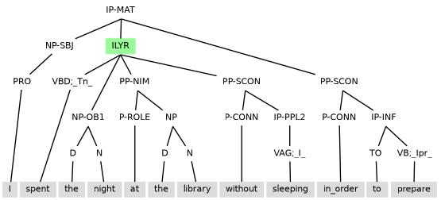
In (11.11), ILYR is needed to ensure that the initial PP-SCON can occur in the scope of the subject and yet also occur before the rest of the main clause elements so that there is an accessible antecedent for that.
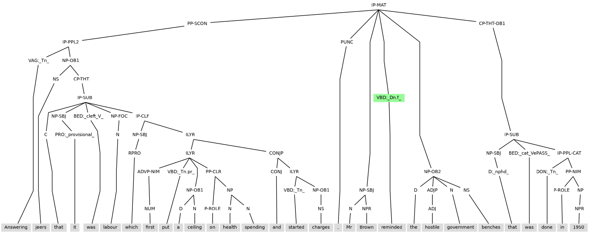
In (11.12) an ILYR is needed to ensure that forgetting scopes outside whilst.
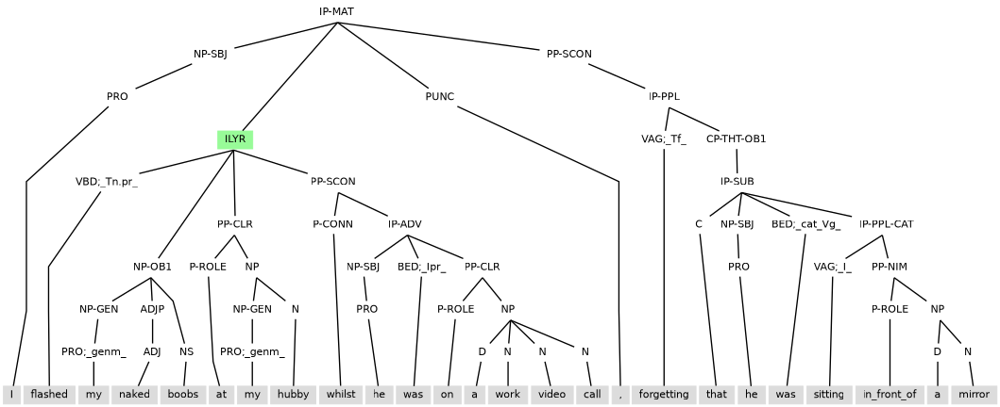
Without _high_, negation scopes only over the verb.
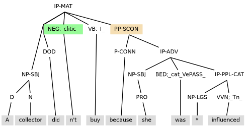
With _high_, negation scopes over all content to the right.
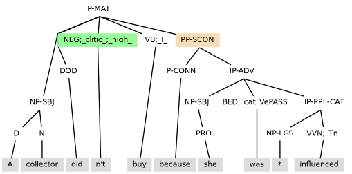
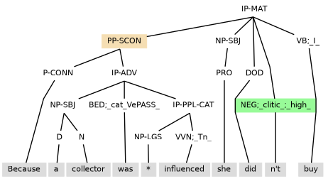
No extra annotation is required for subject control to reach into an adverbial clause occurring within the same clause but prior to a subject. For example, in (11.16) the disease controls into the initial conditional adverbial to be the subject for the passive untreated.
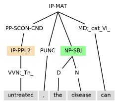
Examples (11.17) and (11.19) are the same sentence annotated in two different ways: (11.17) has IP-INF, while (11.19) has IP-INF2. This difference alters who the talker is and the choice of resolution for the instance of him.
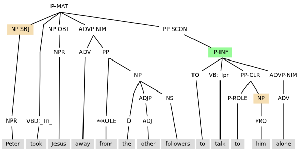
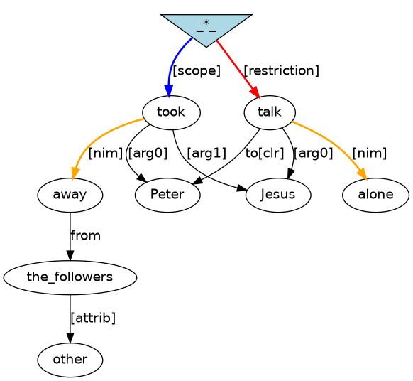
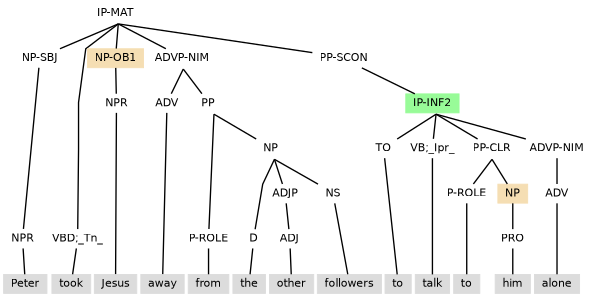
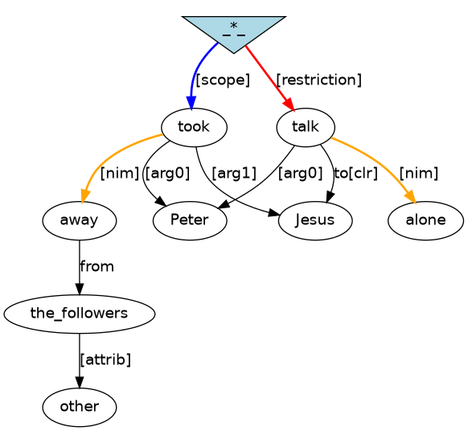
Example (11.21) illustrates the need to mark IP-PPL2 and IP-INF2 to maintains subject control.
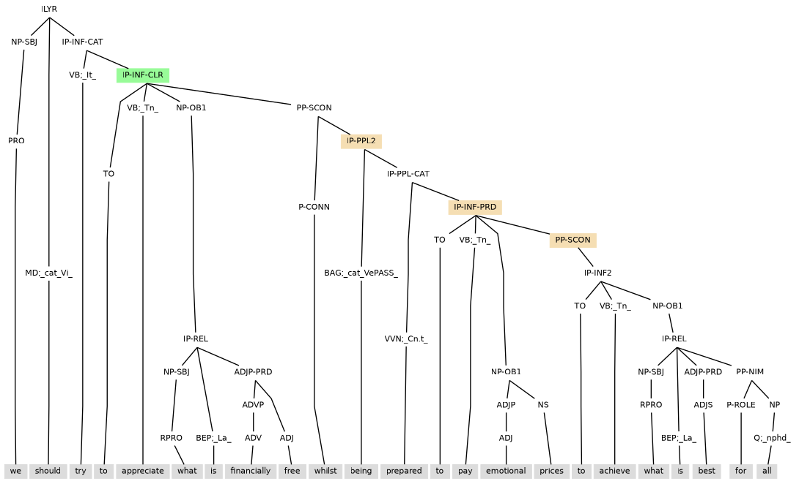
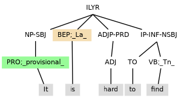
In (11.23) the matrix subject controls through to the embedded be.
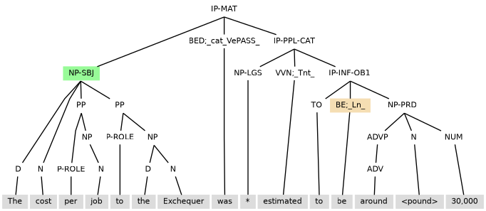
When there is clause-within-clause subordination, the possibility arises of an element from the main clause making a direct contribution to the subordinate clause while being left with unclear status in the main clause. One notable scenario of this involves derived subjects. (The other notable scenario involves derived objects.)
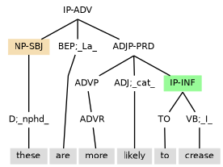
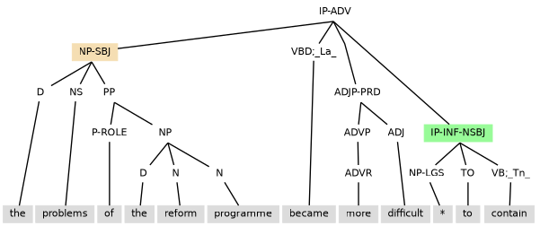
Tag extension -NSBJ marking a notional subject can also be seen when the clause has: (i) a subject marked -ESBJ occurring with existential there, as in (11.26); or (ii) a subject inherited from control, as with the environment created by the reduced relative clause (the IP-PPL under NP) in (11.27).
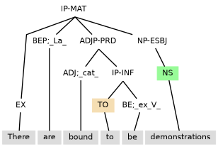
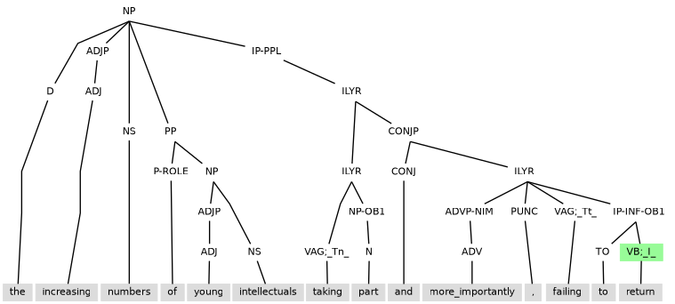
Note the presence of the ILYR layer in (11.26). With this annotation, the ILYR projection functions as a direct embedding of the layer that contains it, so that all other content of the containing layer scopes over the ILYR, as if the ILYR had final placement within its containing layer. This allows the -ESBJ subject to scope into the ILYR.
In (11.28) ILYR is needed to ensure that the the existential subject (NP-ESBJ) can contribute its role.
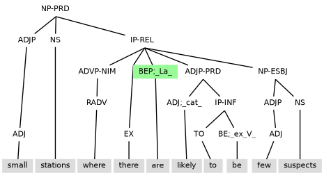
Note the use of IP-INF3 in (11.29) to block control.
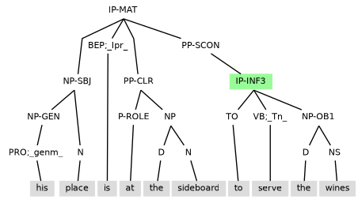
Control into a adverbial clause prior to the main clause subject and containing a tough-construction:
Example (11.30) illustrates conjuncts with no control, control with a tough-construction, and control with catenative seems.
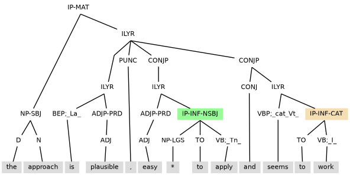
Example (11.31) has control into a notional object.
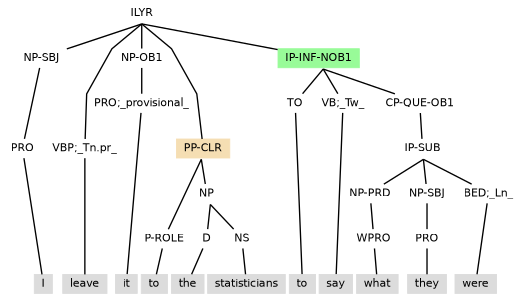
Prevention of subject control is achieved by adding ‘3’ to the label of the highest level of the clause into which control needs to be blocked. For example, (11.32) has IP-PPL3-OB1 to prevent the clouds from being the subject of bombing.
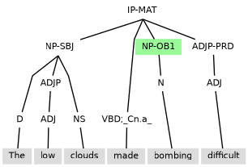
Example (11.33) has instances of IP-PPL3 to prevent control from the subject These into the complements of from and to.
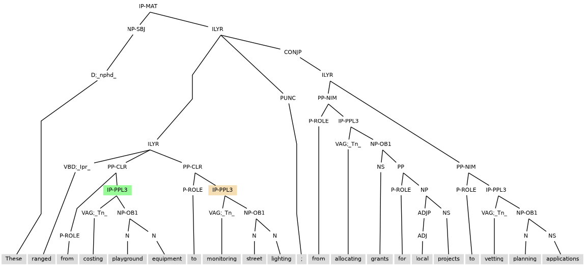
Example (11.34) contains an adverbial participle clause that contains a subject and so as is tagged IP-PPL3 (under PP-SCON) to ensure there is no control to disrupt the internal subject.
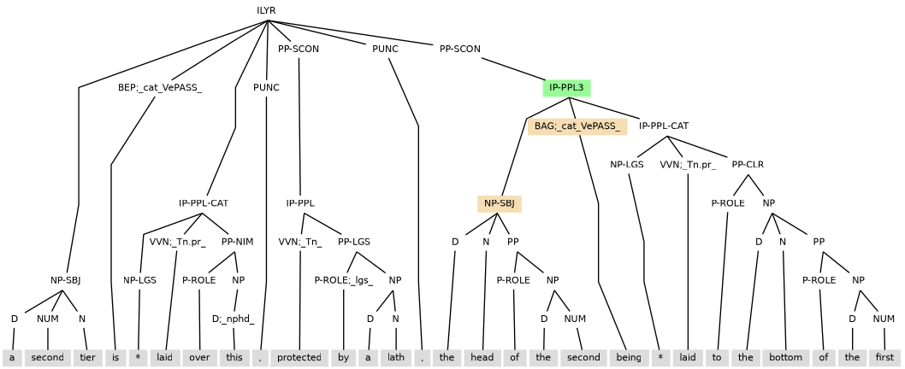
Compare (11.35) where control is blocked because there is IP-PPL3 with (11.16) above where control happens because there is IP-PPL2.
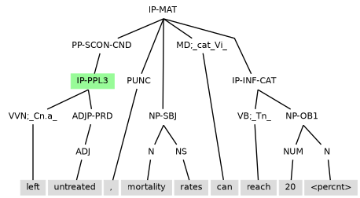
For (11.36) control needs to be blocked with IP-PPL3 so that it can be an elided marriage that is arranged and not Edward.
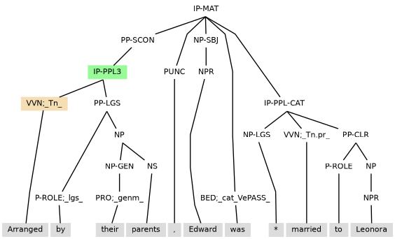
Control with PP-CLR as the controller:
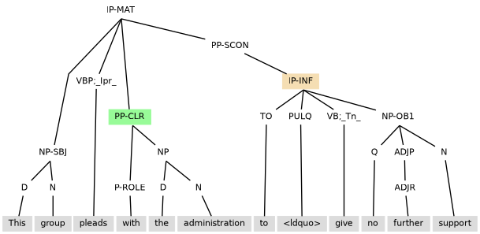